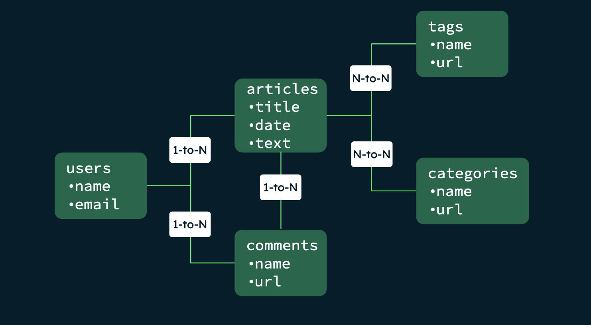

Чому великі компанії обирають NoSQL?
Сучасні цифрові сервіси обслуговують мільйони користувачів одночасно. Наприклад, соціальні мережі щосекунди отримують тисячі нових повідомлень, фотографій та реакцій.
Для обробки таких навантажень потрібні системи, які можуть легко розподіляти дані між багатьма серверами та продовжувати працювати навіть у разі відмови окремих вузлів.
Розподілене зберігання даних
На відміну від багатьох традиційних баз даних, NoSQL-системи часто працюють одразу на декількох серверах.
Такий підхід називається розподіленою архітектурою.
Користувачі
|
v
+------------+
| Балансувальник |
+------------+
|
-------------------------
| | |
v v v
Сервер 1 Сервер 2 Сервер 3
Якщо один сервер перестає працювати, інші продовжують обслуговувати користувачів.
Реплікація даних
Реплікація — це створення копій даних на декількох серверах.
Завдяки цьому інформація не втрачається навіть у разі збою обладнання.
Документ
|
+--> Сервер 1
+--> Сервер 2
+--> Сервер 3
Переваги реплікації
- Підвищення надійності системи
- Швидше отримання інформації
- Захист від втрати даних
Шардінг (Sharding)
Якщо даних стає занадто багато, їх можна розділити між кількома серверами.
Цей процес називається шардінгом.
Учні A-H --> Сервер 1 Учні I-P --> Сервер 2 Учні Q-Z --> Сервер 3
Кожен сервер зберігає лише частину інформації, що дозволяє ефективно працювати навіть із мільярдами записів.
Проблема узгодженості даних
Коли інформація зберігається на багатьох серверах, виникає питання: чи всі сервери мають однакові дані?
У деяких NoSQL-системах допускається невелика затримка між оновленням інформації на різних вузлах.
CAP-теорема
Одним із важливих принципів розподілених систем є CAP-теорема.
Вона стверджує, що система не може одночасно забезпечити:
- Consistency — повну узгодженість даних;
- Availability — постійну доступність;
- Partition Tolerance — стійкість до мережевих збоїв.

Розробники повинні знаходити баланс між цими характеристиками.
Порівняння популярних NoSQL систем
| Система | Тип | Основне застосування |
|---|---|---|
| MongoDB | Документна | Вебдодатки |
| Redis | Key-Value | Кешування |
| Neo4j | Графова | Соціальні мережі |
| Cassandra | Колонкова | Big Data |
Використання NoSQL у реальних проєктах
Соціальні мережі
Зберігання профілів користувачів, списків друзів, повідомлень та медіафайлів.
Інтернет-магазини
Каталоги товарів часто містять тисячі різних характеристик, тому документні бази даних є дуже зручними.
Стримінгові платформи
Зберігають історію переглядів та формують персональні рекомендації.
Підсумок
- NoSQL добре працює в розподілених системах.
- Підтримує реплікацію та шардінг.
- Дозволяє обробляти великі обсяги інформації.
- Активно використовується у сучасних вебсервісах.
Запитання для самоперевірки
- Що таке реплікація?
- Для чого використовується шардінг?
- У чому суть CAP-теореми?
- Які переваги розподіленої архітектури?
- Чому великі компанії використовують NoSQL?